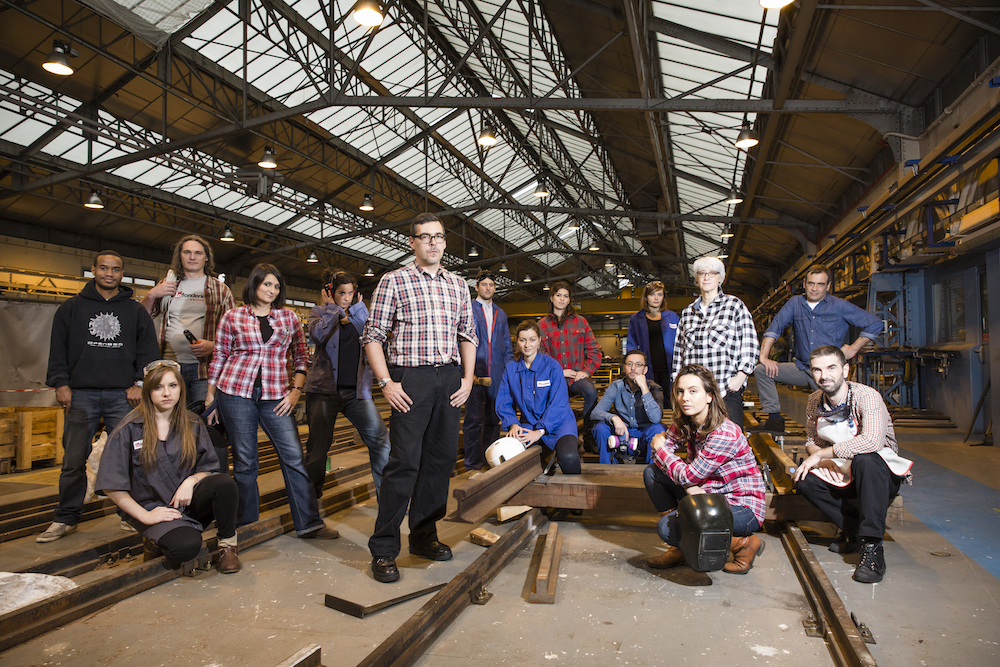
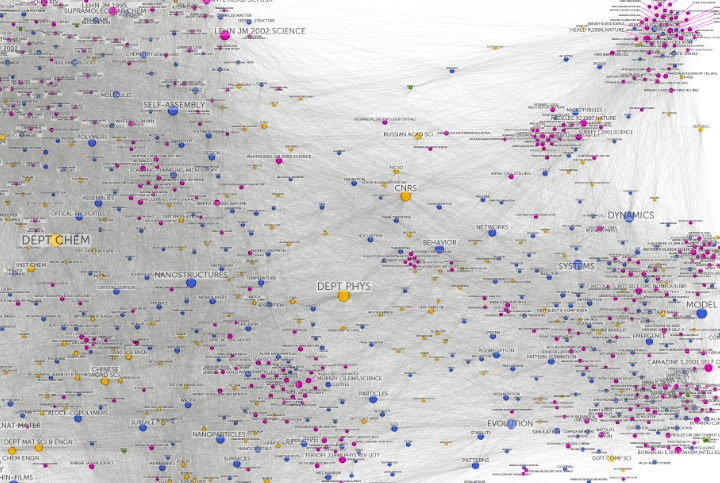
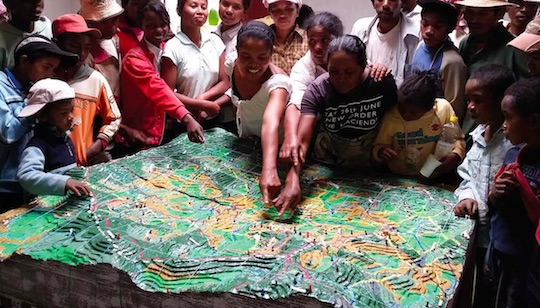
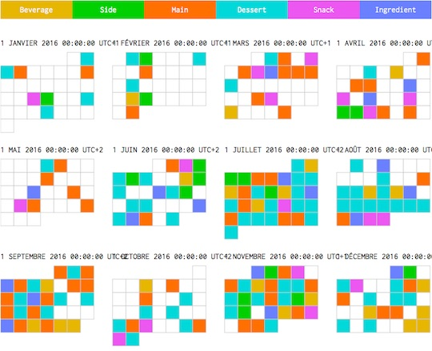

Donnees-a-voir
Informations sur les datas
Axelle Lemaire
Secrétaire d’État auprès du Ministre de l’économie et des finances, chargée du numérique et de l’innovation.
http://www.gouvernement.fr/ministre/axelle-lemaire
Etalab
Etalab est une mission créée en 2011 chargée de la politique d'ouverture et de partage des données publiques du gouvernement français, de coordonner l'action du gouvernement en vue du gouvernement ouvert et de la mise en œuvre des fonctions attribuées à l'admninistrateur général des données. Etalab développe et maintient le portail des données ouvertes du gouvernement français data.gouv.fr.

La Fonderie
La Fonderie est un organisme agile composé de 16 personnes dont les missions sont : - de participer au développement de l’économie numérique en Île-de-France en encourageant le foisonnement et l’innovation technologique sur le territoire francilien. - d’accompagner les appels à projet régionaux « e-inclusion » et « espaces de travail collaboratif ». - de réfléchir aux nouveaux enjeux culturels et sociaux induits par le numérique et de préfigurer les politiques publiques utiles au secteur des TIC.
https://lafonderie-idf.fr/tag/open-data/

Medialab
Dixième centre de recherche de Sciences Po, le médialab a été créé en 2009 pour aider les sciences sociales et humaines à tirer le meilleur profit de la masse de données rendues disponibles par la numérisation.
Le médialab est un laboratoire de moyens numériques, un centre de ressources et de compétences ainsi qu’un lieu d’expérimentation, de veille et de recherche dédié à la pratique des sciences sociales.
http://www.medialab.sciences-po.fr/fr/

MesInfos
Le projet MesInfos explore la question des Self Data, la production, l’exploitation et le partage de données personnelles par les individus, sous leur contrôle et à leurs propres fins : pour mieux se connaître, prendre de meilleures décisions, évaluer ses décisions passées, se faciliter la vie…

Open Democracy Now
Open Democracy Now rassemble une communauté d’acteurs aux profils complémentaires désireux d’apporter des solutions concrètes aux enjeux d’une démocratie plus participative et collaborative. Le projet est conjointement organisé par Open Law, DemocracyOS, Open Source Politics, Etalab, République Citoyenne, et des civic hackers motivés qui ont rejoint l’aventure. Porté tout au long de l'année, le projet Open Democracy Now se décline sous forme de grandes rencontres, comme des hackathons, échelonnées tous les deux mois environ.

Regards Citoyens
Le collectif Regards Citoyens est une association constituée de citoyens de tous âges et régions, tous bénévoles, qui se sont rencontrés sur Internet dans un désir commun de proposer un accès simplifié au fonctionnement de nos institutions démocratiques à partir des informations publiques.
https://www.regardscitoyens.org/

Open Law
Open Law est un programme de cocréation numérique destiné à mettre en valeur le droit ouvert, accompagner globalement l'ouverture des données juridiques et stimuler l'innovation collaborative autour des données juridiques ouvertes. Il préfigure et consolide une communauté de legal hackers composée de toute personne désirant contribuer, quelle que soit sa formation, son expérience ou encore ses compétences étudiants et professionnels du droit, graphistes, développeurs ou entrepreneurs ; porteurs de projets et simples contributeurs, etc.

The Open Data Institute ( Londres )
L’ODI a été co-fondé en 2012 par l’inventeur du web Sir Tim Berners-Lee et l’expert en intelligence artificielle Sir Nigel Shadbolt pour répondre aux défis mondiaux d’aujourd’hui de l’utilisation du web des données.

Open Knowledge Foundation
L'Open Knowledge Foundation est une association à but non lucratif de droit britannique promouvant la culture libre, en particulier les contenus libres et l'open data (données ouvertes). Elle a été créée le 24 mai 2004 à Cambridge au Royaume-Uni1. La fondation a publié la définition des savoirs libres (open definition) et conduit un certain nombre de projets, comme CKAN, un logiciel permettant de créer un catalogue de données, utilisé par de nombreux organismes pour gérer leur portail de données ouvertes, ou « where does my money go », un service de suivi des dépenses publiques3. En plus de fournir des outils techniques, la fondation milite pour la culture libre4 et offre une aide juridique dans le choix des licences accompagnant des contenus libres. Elle a par exemple soutenu le développement de la licence Open Database License (ODbL) et l'écriture de la définition de la culture libre (Open Definition).

Tactical Tech
Organisation internationale dédiée à l'utilisation de l'information dans l'activisme. Basé à Berlin, Tactical Tech travaille avec un réseau international de partenaires et collaborateurs pour aider les défenseurs des droits, de la responsabilité et la transparence et la communauté avec laquelle ils travaillent.

Exposing the invisible
Une série de films courts, interviews, guides et ressources, explorant les différentes techniques, outils et méthodes en rapport avec les pratiques individuelles de ceux qui travaillent aux nouvelles frontières de l’investigation.
https://exposingtheinvisible.org

PPGIS
Le forum sur l’usage participatif des systèmes et technologies de l’information géo-spatiale. C’est un site pour discuter des technologies utilisées en gestion de crise, développement participatif, gestion durable des ressources naturelles et droits de propriétés coutumiers dans les pays développés et parmi les populations indigènes dans le monde.
http://participatorygis.blogspot.fr

Flowing Data
Un site de référence dans le domaine de la data visualisation, avec une page d'exemples très fournie.
http://flowingdata.com/category/projects/

Apprendre l'open data
Pour en savoir plus, une liste de documentation partagée initiée lors d'un cours de Sciences Po Paris donné par Laure Lucchesi et Claire Foulquier-Gazagnes d'Etalab.
https://github.com/cmfg/LearnOpenData